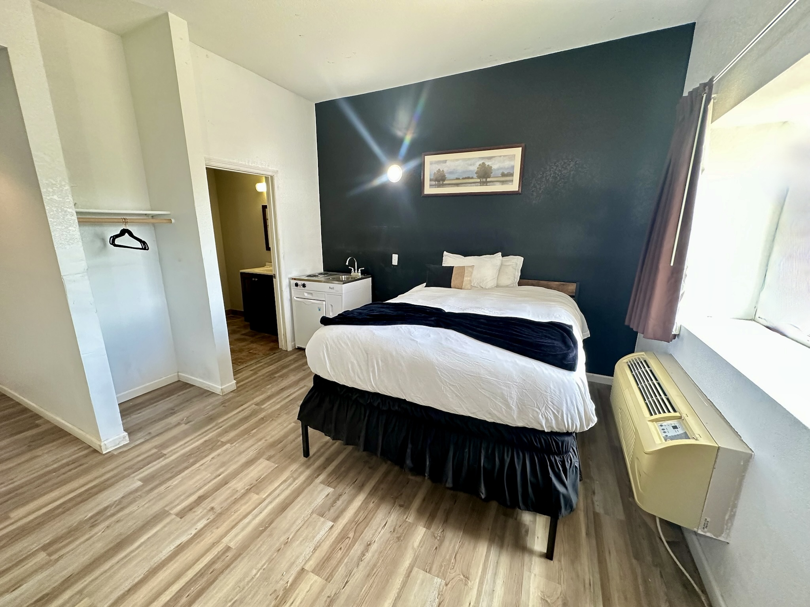
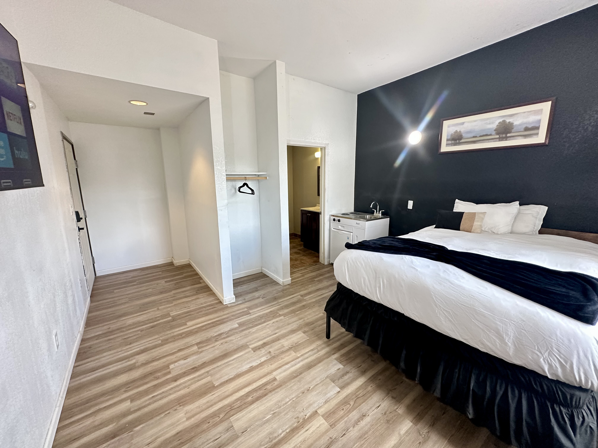
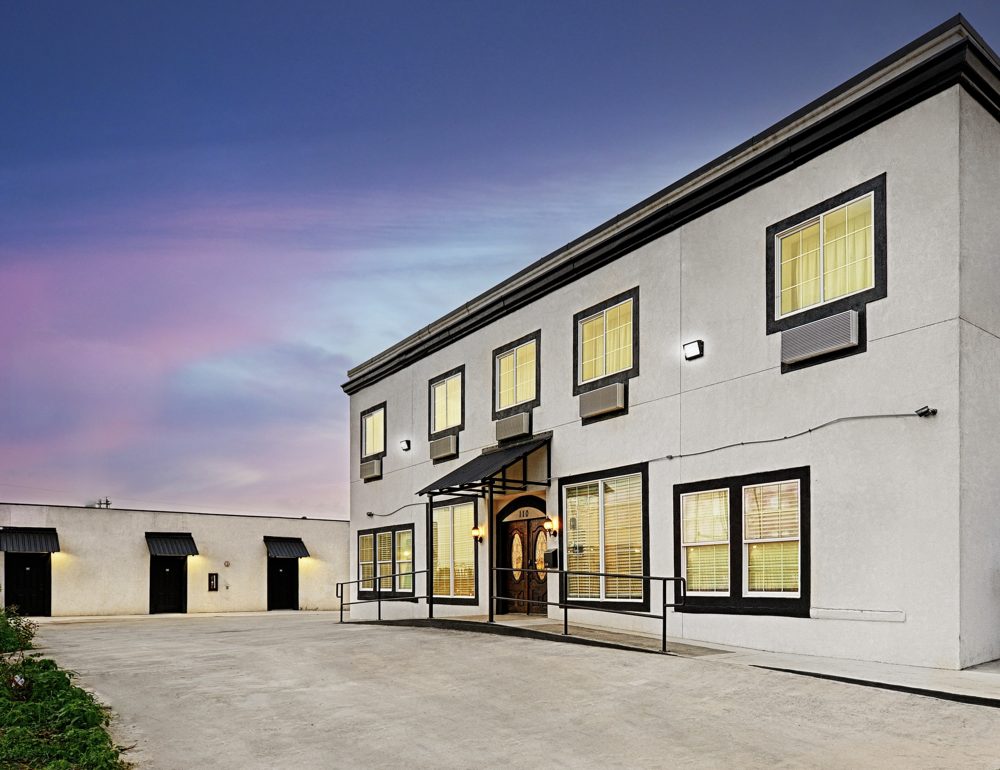

Renovated Rooms
Renovated furnished rooms are available in Dilley, Texas.
Hotel Dilley offers renovated furnished rooms and flexible nightly or longer-stay options. Some rooms include kitchenette facilities, so the right next step is a direct room-fit conversation.
Extended Stay Fit
If kitchenette access matters, confirm it directly. Hotel Dilley can discuss which furnished room type best matches a nightly or longer-stay plan.
Renovated furnished rooms are available in Dilley, Texas.
Flexible nightly and longer-stay options are offered.
Some rooms include kitchenette facilities. Confirm before relying on that amenity.
How To Decide
Use these questions when calling Hotel Dilley so the room recommendation is based on the stay you actually need.



Clear Answers
Some rooms include kitchenette facilities.
No. Ask which room type includes the facilities you need.
Flexible nightly and longer-stay options are offered.
Call to confirm room type, stay length, and whether a kitchenette-equipped room fits your needs.